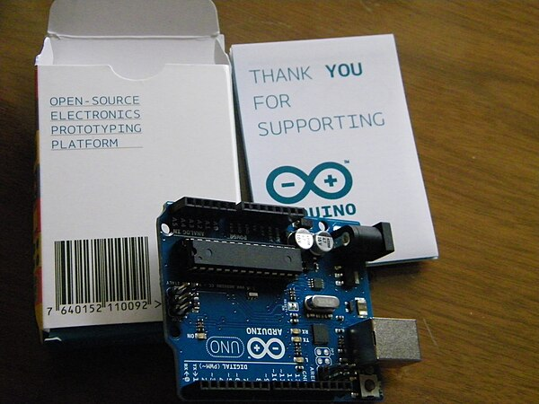
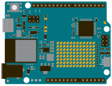
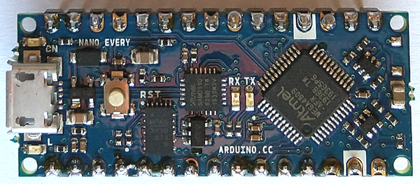
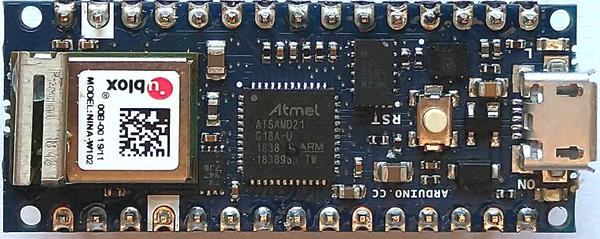
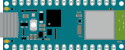
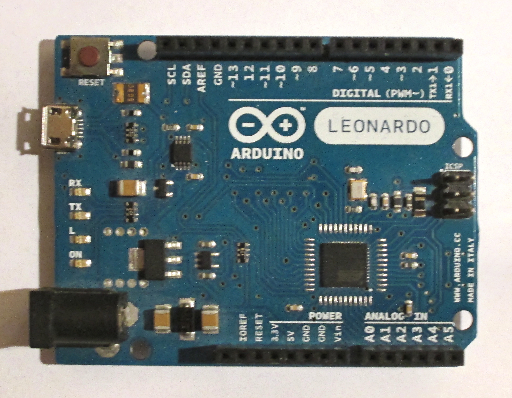
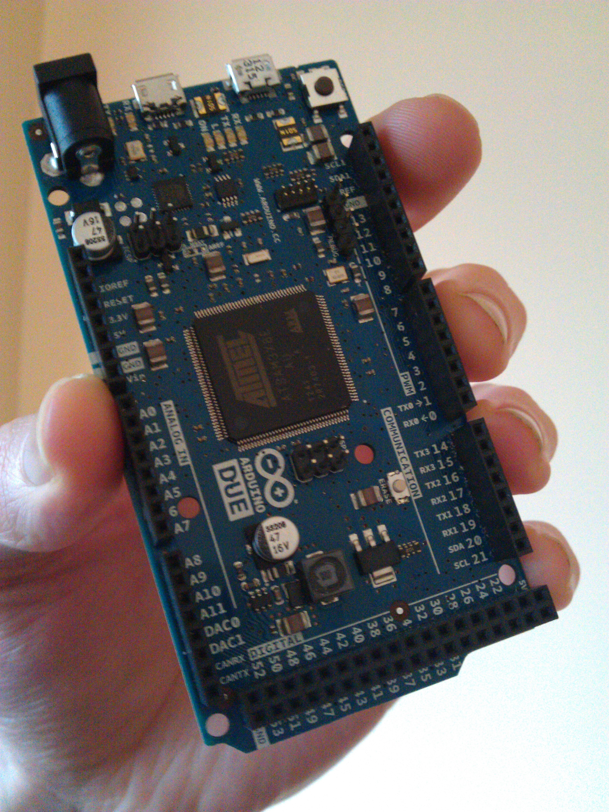
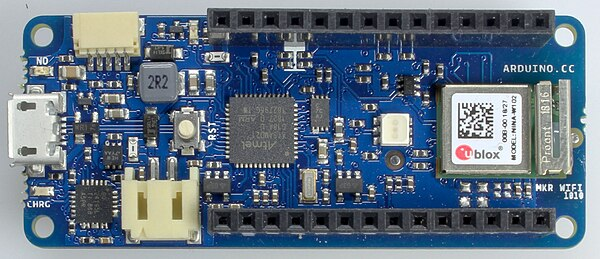

Arduino Board Models
Classic / Uno Family

Arduino Uno R3
ATmega328P @ 16 MHz
Flash 32KB · SRAM 2KB · EEPROM 1KB
USB ATmega16U2 bridge · Power 7–12V VIN
The definitive beginner board. Massive ecosystem of shields and tutorials. Best for learning and prototyping.
USB ATmega16U2 bridge · Power 7–12V VIN
The definitive beginner board. Massive ecosystem of shields and tutorials. Best for learning and prototyping.

Arduino Uno R4 WiFi
Renesas RA4M1 (ARM Cortex-M4) @ 48 MHz
Flash 256KB · SRAM 32KB · EEPROM 8KB
Extra ESP32-S3 co-processor (WiFi/BLE), 12×8 LED matrix, CAN bus, built-in RTC
The modern Uno. Same footprint as R3 but dramatically more powerful with connectivity built in.
Extra ESP32-S3 co-processor (WiFi/BLE), 12×8 LED matrix, CAN bus, built-in RTC
The modern Uno. Same footprint as R3 but dramatically more powerful with connectivity built in.

Arduino Mega 2560
ATmega2560 @ 16 MHz
Flash 256KB · SRAM 8KB · EEPROM 4KB
UART 4 hardware · Power 7–12V VIN
More pins, more memory. Go-to for 3D printers (RAMPS), large LED matrices, and complex sensor arrays.
UART 4 hardware · Power 7–12V VIN
More pins, more memory. Go-to for 3D printers (RAMPS), large LED matrices, and complex sensor arrays.
Nano Family

Arduino Nano
ATmega328P @ 16 MHz
Flash 32KB · SRAM 2KB · EEPROM 1KB
Size 18 × 45mm · Breadboard-friendly DIP form factor
Same power as the Uno in a tiny package. Perfect for space-constrained breadboard projects.
Size 18 × 45mm · Breadboard-friendly DIP form factor
Same power as the Uno in a tiny package. Perfect for space-constrained breadboard projects.

Arduino Nano Every
ATmega4809 @ 20 MHz
Flash 48KB · SRAM 6KB · EEPROM 256B
USB SAMD11 bridge · Size 18 × 45mm
The affordable modern Nano. More flash and SRAM than the classic, pin-compatible, cheaper price.
USB SAMD11 bridge · Size 18 × 45mm
The affordable modern Nano. More flash and SRAM than the classic, pin-compatible, cheaper price.

Arduino Nano 33 IoT
SAMD21 (ARM Cortex-M0+) @ 48 MHz
Flash 256KB · SRAM 32KB
Radio u-blox NINA-W102 (ESP32) · IMU LSM6DS3 6-axis
IoT in the Nano footprint. WiFi, BLE, and a motion sensor — ideal for connected wearables and IoT nodes.
Radio u-blox NINA-W102 (ESP32) · IMU LSM6DS3 6-axis
IoT in the Nano footprint. WiFi, BLE, and a motion sensor — ideal for connected wearables and IoT nodes.

Arduino Nano ESP32
ESP32-S3 (Xtensa LX7 dual-core) @ 240 MHz
Flash 16MB · SRAM 512KB
USB Native USB-C · Supports Arduino IDE and MicroPython
The most powerful Nano. ESP32-S3 at its core — screaming fast, WiFi+BLE built-in, massive storage.
USB Native USB-C · Supports Arduino IDE and MicroPython
The most powerful Nano. ESP32-S3 at its core — screaming fast, WiFi+BLE built-in, massive storage.
USB / Pro Family

Arduino Leonardo
ATmega32U4 @ 16 MHz
Flash 32KB · SRAM 2.5KB · EEPROM 1KB
USB Built into ATmega32U4 — acts as HID (keyboard/mouse/joystick)
The hacker's Uno. Native USB means it can impersonate keyboards, mice, and game controllers natively.
USB Built into ATmega32U4 — acts as HID (keyboard/mouse/joystick)
The hacker's Uno. Native USB means it can impersonate keyboards, mice, and game controllers natively.

Arduino Due
SAM3X8E (ARM Cortex-M3) @ 84 MHz
Flash 512KB · SRAM 96KB · 2× native USB
Extras CAN bus, 2× I²C, 4× UART, hardware SPI · I/O 3.3V only!
Arduino's first 32-bit ARM board. Huge memory, fast clock — ideal for audio DSP, complex control systems.
Extras CAN bus, 2× I²C, 4× UART, hardware SPI · I/O 3.3V only!
Arduino's first 32-bit ARM board. Huge memory, fast clock — ideal for audio DSP, complex control systems.

Arduino MKR WiFi 1010
SAMD21 (ARM Cortex-M0+) @ 48 MHz
Flash 256KB · SRAM 32KB
Radio u-blox NINA-W102 · Security ECC508 crypto chip · Built-in LiPo charger
The MKR form factor for IoT. Compact, secure, battery-ready. Built for connected products and cloud services.
Radio u-blox NINA-W102 · Security ECC508 crypto chip · Built-in LiPo charger
The MKR form factor for IoT. Compact, secure, battery-ready. Built for connected products and cloud services.
Model Comparison
| Board | MCU | MHz | Flash | SRAM | I/O V | Digital | Analog | WiFi | BLE | USB |
|---|---|---|---|---|---|---|---|---|---|---|
| Uno R3 | ATmega328P | 16 | 32KB | 2KB | 5V | 14 | 6 | — | — | Bridge |
| Uno R4 WiFi | Renesas RA4M1 | 48 | 256KB | 32KB | 5V | 14 | 6 | ✓ | ✓ | Native |
| Mega 2560 | ATmega2560 | 16 | 256KB | 8KB | 5V | 54 | 16 | — | — | Bridge |
| Nano | ATmega328P | 16 | 32KB | 2KB | 5V | 22 | 8 | — | — | Bridge |
| Nano Every | ATmega4809 | 20 | 48KB | 6KB | 5V | 24 | 8 | — | — | Bridge |
| Nano 33 IoT | SAMD21 M0+ | 48 | 256KB | 32KB | 3.3V | 22 | 8 | ✓ | ✓ | Native |
| Nano ESP32 | ESP32-S3 | 240 | 16MB | 512KB | 3.3V | 22 | 8 | ✓ | ✓ | Native |
| Leonardo | ATmega32U4 | 16 | 32KB | 2.5KB | 5V | 20 | 12 | — | — | Native HID |
| Due | SAM3X8E M3 | 84 | 512KB | 96KB | 3.3V | 54 | 12 | — | — | 2× Native |
| MKR WiFi 1010 | SAMD21 M0+ | 48 | 256KB | 32KB | 3.3V | 22 | 7 | ✓ | ✓ | Native |